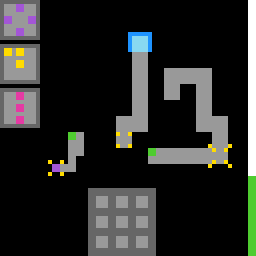

sc25
Steer a block and light large-panel cells to start machines; stepping into the socket clears the level.
6 levels · 18 rules · all levels replayed in Lean
What to notice: the sealed level. AWM's proof that no route wins with a budget of 18 is in the Sealed level section; the cheapest win, 19, is replayed on the engine on the home page.
Replay
The certified run that cleared every level, one action at a time. Beside each step: the rules of the model that explain it; they are also marked in the rule list below.

Explained by
Press Play or step to load the run. Keys, while the player is on screen: ← → step, Space play / pause. A click is circled; cells that changed are outlined.
Sealed level

A variant of level 4 is sealed at a budget of 18. Exhaustive engine search shows that the cheapest win costs 19: the sealed level cannot be won, while one more unit permits a win. After each attempt, every agent is asked whether the level can be won. AWM proves in Lean that no legal sequence of actions wins within a budget of 18 under its learned model, and checks a winning route at 19. GPT-6 Astra finds a route costing 22 and assumes it is optimal without a proof.
The theorem
From one of AWM's runs: no action list wins with a budget of 18 or less; one more unit, and a route of cost 19 wins. This theorem is about the model built by one AWM run on the sealed level (run 2a3cc5), which tracks the budget. The model shown in the Model section below is the one learned on the public game, where the budget bar is read but its limit is not modelled.
theorem never_wins (B : Nat) (hB : B ≤ 18) (as : List Act) : (run B start as).won = false :=
(run_J B hB as start (J_start B)).1
def route19 : List Act :=
[.mv .D, .mv .D, .mv .L, .mv .L, .mv .L, .F 0, .mv .L, .mv .U, .F 3, .mv .R, .mv .R, .M6,
.mv .R, .mv .R, .mv .R, .mv .R, .mv .R, .mv .R]
theorem route19_wins : (run 19 start route19).won = true := by decide +kernel
theorem route19_at18 : (run 18 start route19).won = false := by decide +kernelHow it plays
The player controls a block, which has two sizes, large and small. The direction keys make it turn toward that side, and if the space ahead is walkable by a full body length it moves over. Below the screen is a large square-grid panel, with several small panel patterns hanging beside it. Light up cells on the large panel, and once they form the pattern of some small panel, the large panel goes entirely dark, and at the same time the corresponding machine starts: a diamond lets the block switch between large and small, a corner moves the block as a whole into the designated square frame, and a vertical line wipes one specimen colour off the field entirely (it has to face the frame holding the specimen). Roads that cannot be walked are opened up with these three machines, and stepping into the socket with a direction key clears the level. The vertical bar on the right is the budget, and fuel pressed onto the ground can refill some of it.

Model
The final model: 5 object types and 18 rules. Each rule is a Python check against every recorded step; 11 of them are translated into Lean (the paper's per-game table). Code under a rule is the file of the same name in the agent's Lean project.
Object types
- Player block
meThe block the player controls: position, size (large or small), and facing.Lean · Marker.lean
-- St.me : Marker structure Marker where row : Nat col : Nat side : Nat face : Face deriving DecidableEq, Repr - Large panel
padThe square-grid panel below the screen; each cell is lit or unlit.Lean · Pad.lean
-- St.pad : List PadCell inductive PadCell where | off | blank | lit deriving DecidableEq, Repr - Small panels
legendsPatterns beside the screen, each matching one machine.Lean · Legend.lean
-- Board.legends : List Legend structure Legend where color : Nat pattern : List (Nat × Nat) deriving DecidableEq, Repr - Budget bar
barThe vertical budget bar on the right edge.Lean · Bar.lean
namespace Game structure Bar where rows : Nat deriving DecidableEq, Repr end Game - Ground
groundFloor, coloured corner marks, solid blocks, fuel, and the socket.Lean · World.lean
-- World.ground : Nat structure World where me : Marker pad : List PadCell legends : List Legend ground : Nat deriving DecidableEq, Repr
Rules
stepDirection keys turn the block and move it one body length onto walkable space.Python
from __future__ import annotations from derive.geometry import ahead, square from derive.standing import all_socket, all_walkable from objects import parse_action, read from .._scope import first, level_changed, session_first, unreadable def _target(w, face): me = w.me r, c = ahead(me.row, me.col, me.side, face) return (r, c), square(r, c, me.side) def scope_(prev, action, nxt, ctx=None): a = parse_action(action) if a[0] != "dir": … w, nw = read(prev), read(nxt) r = first(level_changed(ctx), session_first(ctx), unreadable(w, nw)) if r: return r if all_socket(w, _target(w, a[1])[1]): … return None def assert_(prev, action, nxt, ctx=None): if scope_(prev, action, nxt, ctx): return "NA" w, nw = read(prev), read(nxt) face = parse_action(action)[1] (r, c), cells = _target(w, face) want = (r, c) if all_walkable(w, cells) else (w.me.row, w.me.col) ok = (nw.me.row, nw.me.col) == want and nw.me.side == w.me.side and nw.me.face == face return "TRUE" if ok else "FALSE"Lean · Step.lean
import Obj.Model.Render import Obj.Derive.Standing namespace Game def stepDir (b : Board) (s : St) (f : Face) : St := let turned : Marker := { s.me with face := f } match ahead s.me f with | none => { s with me := turned } | some (r, c) => let pic := render b s if (square r c s.me.side).all (walkable pic b.legends) then { s with me := { turned with row := r, col := c } } else { s with me := turned } end Gameclick_lightsClicking an unlit cell lights only that cell when no pattern is completed.Python
from __future__ import annotations from derive.pad_hits import completes, lights from objects import parse_action, read from .._scope import unreadable def scope_(prev, action, nxt, ctx=None): if parse_action(action)[0] != "click": … w, nw = read(prev), read(nxt) if unreadable(w, nw): return unreadable(w, nw) if lights(w, action) is None: … if completes(w, action) is not None: … return None def assert_(prev, action, nxt, ctx=None): if scope_(prev, action, nxt, ctx): return "NA" w, nw = read(prev), read(nxt) cell = lights(w, action) i = cell[0] * 3 + cell[1] want = tuple("lit" if j == i else s for j, s in enumerate(w.pad.cells)) return "TRUE" if nw.pad.cells == want and nw.me == w.me else "FALSE"Lean · ClickLights.lean
import Obj.Model.St namespace Game def lightUp (s : St) (i : Nat) : St := { s with pad := s.pad.set i PadCell.lit } end Gamecompletion_clearsWhen lit cells match a small panel's pattern, every large-panel cell goes dark.Python
from __future__ import annotations from derive.pad_hits import completes from objects import parse_action, read from .._scope import unreadable def scope_(prev, action, nxt, ctx=None): if parse_action(action)[0] != "click": … w, nw = read(prev), read(nxt) if unreadable(w, nw): return unreadable(w, nw) if completes(w, action) is None: … return None def assert_(prev, action, nxt, ctx=None): if scope_(prev, action, nxt, ctx): return "NA" return "TRUE" if all(s == "blank" for s in read(nxt).pad.cells) else "FALSE"Lean · CompletionClears.lean
import Obj.Model.Board import Obj.Model.St namespace Game def completes (b : Board) (pad : List PadCell) : Option Nat := match b.legends.filter (fun l => l.pattern == litSet pad) with | [l] => some l.color | _ => none def clearPad (s : St) : St := { s with pad := s.pad.map (fun _ => PadCell.blank) } end Gamedead_clickClicking outside the panel or on a lit cell changes nothing, budget included.Python
from __future__ import annotations from derive.pad_hits import lights from objects import parse_action, read from .._scope import unreadable def scope_(prev, action, nxt, ctx=None): if parse_action(action)[0] != "click": … w, nw = read(prev), read(nxt) if unreadable(w, nw): return unreadable(w, nw) if lights(w, action) is not None: … return None def assert_(prev, action, nxt, ctx=None): if scope_(prev, action, nxt, ctx): return "NA" return "TRUE" if read(prev) == read(nxt) else "FALSE"Lean · DeadClick.lean
import Obj.Model.Board import Obj.Model.St namespace Game def padHitAux (x y : Nat) : List (Nat × Nat × Nat × Nat) → Nat → Option Nat | [], _ => none | (t, l, bt, r) :: rest, i => if t ≤ y && y ≤ bt && l ≤ x && x ≤ r then some i else padHitAux x y rest (i + 1) def padHit (b : Board) (x y : Nat) : Option Nat := padHitAux x y b.padRects 0 def deadClick (b : Board) (s : St) (x y : Nat) : Bool := match padHit b x y with | none => true | some i => s.pad[i]? == some PadCell.lit end GameresizeThe diamond pattern switches the block between large and small sizes.Python
from __future__ import annotations from derive.fuel import eaten from derive.geometry import corners from derive.landing import grow_landing from derive.machines import RESIZE, TELEPORT, machine from derive.pad_hits import completes from derive.rings import halo_of, solid2, span6 from objects import parse_action, read from objects.player.marker import Marker from .._common import ground_diff from .._scope import unreadable def scope_(prev, action, nxt, ctx=None): if parse_action(action)[0] != "click": … w, nw = read(prev), read(nxt) if unreadable(w, nw): return unreadable(w, nw) if machine(completes(w, action)) != "resize": … if w.me.side == 2 and grow_landing(w) is None: … return None def _me_ok(w, nw): me = w.me if me.side == 4: want = Marker(me.row, me.col, 2, me.face) else: r, c = grow_landing(w) want = Marker(r, c, 4, me.face) return nw.me == want def _rings_ok(w, nw): hidden = w.me.cells() | nw.me.cells() off = set() for l in w.legends: for (r, c) in span6(w, l.color): off |= corners(r, c, 6) off -= hidden changed = {p: (a, b) for p, a, b in ground_diff(w, nw, skip=eaten(w, nw))} for p in off: if changed.get(p, (None, ("void",)))[1] != ("void",): return False rest = {p: ab for p, ab in changed.items() if p not in off} if w.me.side == 4: on = set() for p in solid2(w, RESIZE): on |= halo_of(p) on -= hidden return set(rest) == on and all(b == ("mark", RESIZE) for _, b in rest.values()) if any(b != ("mark", TELEPORT) for _, b in rest.values()): return False lit = set(rest) tele = nw.ground.marks_of(TELEPORT) cands = {(r, c) for (r, c) in lit} | {(r, c - 5) for (r, c) in lit} \ | {(r - 5, c) for (r, c) in lit} | {(r - 5, c - 5) for (r, c) in lit} quads = [q for q in cands if corners(q[0], q[1], 6) - hidden == lit and all(p in tele or p in hidden for p in corners(q[0] + 1, q[1] + 1, 4))] return len(quads) == 1 def assert_(prev, action, nxt, ctx=None): if scope_(prev, action, nxt, ctx): return "NA" w, nw = read(prev), read(nxt) return "TRUE" if _me_ok(w, nw) and _rings_ok(w, nw) else "FALSE"Lean · Resize.lean
import Obj.Model.Render import Obj.Derive.Standing namespace Game def growCands (m : Marker) : List (Nat × Nat) := [2, 1, 0].flatMap fun dr => [2, 1, 0].filterMap fun dc => if dr ≤ m.row && dc ≤ m.col then some (m.row - dr, m.col - dc) else none def growLanding (b : Board) (s : St) : Option (Nat × Nat) := let pic := render b s let mine := s.me.cells (growCands s.me).find? fun p => (square p.1 p.2 4).all (growable pic b.legends mine) def resize (b : Board) (s : St) : St := if s.me.side == 4 then { s with me := { s.me with side := 2 } } else if s.me.side == 2 then match growLanding b s with | some p => { s with me := { s.me with row := p.1, col := p.2, side := 4 } } | none => s else s end GameteleportThe corner pattern moves the block into the only same-size, same-parity ringed frame.Python
from __future__ import annotations from derive.geometry import corners from derive.machines import TELEPORT, machine from derive.pad_hits import completes from derive.portals import gated, same from objects import parse_action, read from objects.player.marker import Marker from .._common import ground_diff from .._scope import unreadable def scope_(prev, action, nxt, ctx=None): if parse_action(action)[0] != "click": … w, nw = read(prev), read(nxt) if unreadable(w, nw): return unreadable(w, nw) if machine(completes(w, action)) != "teleport": … if len(same(w, TELEPORT)) > 2 or len(gated(w, TELEPORT)) > 1: … return None def assert_(prev, action, nxt, ctx=None): if scope_(prev, action, nxt, ctx): return "NA" w, nw = read(prev), read(nxt) me, k = w.me, w.me.side diff = ground_diff(w, nw) g = gated(w, TELEPORT) if not g: return "TRUE" if nw.me == me and not diff else "FALSE" dest = g[0] if nw.me != Marker(dest[0], dest[1], k, me.face): return "FALSE" others = [b for b in same(w, TELEPORT) if b != dest] spot = (me.row, me.col) if not others and spot != dest and corners(spot[0], spot[1], k) <= nw.ground.marks_of(TELEPORT): others = [spot] hidden = w.me.cells() | nw.me.cells() ring_d = corners(dest[0] - 1, dest[1] - 1, k + 2) - hidden ring_o = (corners(others[0][0] - 1, others[0][1] - 1, k + 2) - hidden) if others else set() tele = nw.ground.marks_of(TELEPORT) if others: if ring_d & tele or not ring_o <= tele: return "FALSE" elif not ring_d <= tele: return "FALSE" changed = {p for p, _, _ in diff} return "TRUE" if changed <= (ring_d | ring_o) else "FALSE"Lean · Teleport.lean
import Obj.Model.Render namespace Game def sameParity (a b : Nat) : Bool := (a + b) % 2 == 0 def teleCands (b : Board) (s : St) : List Portal := let m := s.me let pool := if m.side == 4 then (match b.portals4[s.gate]? with | some p => [p] | none => []) else if m.side == 2 then b.portals2 else [] pool.filter fun p => sameParity p.row m.row && sameParity p.col m.col && !(p.row == m.row && p.col == m.col) def otherGateAux (d : Portal) : List Portal → Nat → Option Nat | [], _ => none | p :: rest, i => if p != d && sameParity p.row d.row && sameParity p.col d.col then some i else otherGateAux d rest (i + 1) def teleport (b : Board) (s : St) : St := match teleCands b s with | [d] => let s1 := { s with me := { s.me with row := d.row, col := d.col } } if s.me.side == 4 then (match otherGateAux d b.portals4 0 with | some j => { s1 with gate := j } | none => s1) else s1 | _ => s end GameeraseThe vertical line erases specimen colour if the block faces its frame over walkable cells.Python
from __future__ import annotations from derive.boxes import ring, specimen from derive.front import in_front, lane_open from derive.machines import ERASE, machine from derive.pad_hits import completes from objects import parse_action, read from .._common import flat, ground_diff from .._scope import unreadable def fire(w): k = w.me.side box = in_front(w, ERASE) if box is None: return None spec = specimen(w, box, ERASE, k) if spec is None or not lane_open(w, box): return None return box, spec, ring(w, box, ERASE, k) def scope_(prev, action, nxt, ctx=None): if parse_action(action)[0] != "click": … w, nw = read(prev), read(nxt) if unreadable(w, nw): return unreadable(w, nw) if machine(completes(w, action)) != "erase": … return None def assert_(prev, action, nxt, ctx=None): if scope_(prev, action, nxt, ctx): return "NA" w, nw = read(prev), read(nxt) if nw.me != w.me: return "FALSE" d = fire(w) diff = ground_diff(w, nw) if d is None: return "TRUE" if not diff else "FALSE" box, spec, rg = d k = w.me.side zone = {(r, c) for r in range(box[0] - 1, box[0] + k + 1) for c in range(box[1] - 1, box[1] + k + 1)} r0, c0 = min(r for r, _ in rg), min(c for _, c in rg) soft = {(r0, c0), (r0, c0 + 1), (r0 + 1, c0), (r0 + 1, c0 + 1)} before = flat(w) gone = {p for p, t in before.items() if t == spec} gone |= {p for p in zone if before.get(p) in (spec, ("mark", ERASE))} changed = {p for p, _, _ in diff} if changed - gone: return "FALSE" after = flat(nw) for p in gone: if p in nw.me.cells() or p in w.me.cells(): continue t = after.get(p, ("void",)) if t == ("floor",): continue if t == ("fuel",) and p in soft: continue return "FALSE" return "TRUE"Lean · Erase.lean
import Obj.Model.Render import Obj.Derive.Standing namespace Game def nested (lo hi mlo mhi : Nat) : Bool := (lo ≤ mlo && mhi ≤ hi) || (mlo ≤ lo && hi ≤ mhi) def eboxPos (e : EBox) (k : Nat) : Nat × Nat := if k == 4 then (e.top, e.left) else (e.top + 1, e.left + 1) def inFront (e : EBox) (m : Marker) : Bool := let k := m.side let q := eboxPos e k match m.face with | .U => nested e.left (e.left + 3) m.col (m.col + k - 1) && q.1 + k ≤ m.row | .D => nested e.left (e.left + 3) m.col (m.col + k - 1) && m.row + k ≤ q.1 | .L => nested e.top (e.top + 3) m.row (m.row + k - 1) && q.2 + k ≤ m.col | .R => nested e.top (e.top + 3) m.row (m.row + k - 1) && m.col + k ≤ q.2 def laneLines (m : Marker) (q : Nat × Nat) : List (List (Nat × Nat)) := let k := m.side match m.face with | .U => (List.range k).map fun j => (List.range (m.row - (q.1 + k))).map fun i => (q.1 + k + i, m.col + j) | .D => (List.range k).map fun j => (List.range (q.1 - (m.row + k))).map fun i => (m.row + k + i, m.col + j) | .L => (List.range k).map fun i => (List.range (m.col - (q.2 + k))).map fun j => (m.row + i, q.2 + k + j) | .R => (List.range k).map fun i => (List.range (q.2 - (m.col + k))).map fun j => (m.row + i, m.col + k + j) def armed (b : Board) (s : St) (i : Nat) (e : EBox) : Bool := !(s.erased.contains i) && !(s.erased.any fun j => (b.eboxes[j]?.map (·.spec)) == some e.spec) def eraseCandsAux (b : Board) (s : St) : List EBox → Nat → List Nat | [], _ => [] | e :: rest, i => (if armed b s i e && inFront e s.me then [i] else []) ++ eraseCandsAux b s rest (i + 1) def erase (b : Board) (s : St) : St := match eraseCandsAux b s b.eboxes 0 with | [i] => (match b.eboxes[i]? with | some e => let pic := render b s if (laneLines s.me (eboxPos e s.me.side)).any (fun l => l.all (walkable pic b.legends)) then { s with erased := s.erased ++ [i] } else s | none => s) | _ => s end Gamefuel_absorbsCovering fuel removes the whole patch; the budget refills by at least its cell count.Python
from __future__ import annotations from derive.fuel import eaten from objects import read from .._scope import first, is_reset, level_changed, unreadable def scope_(prev, action, nxt, ctx=None): w, nw = read(prev), read(nxt) r = first(level_changed(ctx), is_reset(action), unreadable(w, nw)) if r: return r if not eaten(w, nw): … return None def assert_(prev, action, nxt, ctx=None): if scope_(prev, action, nxt, ctx): return "NA" w, nw = read(prev), read(nxt) gone = eaten(w, nw) mine = nw.me.cells() for p in gone - mine: if p not in nw.ground.floor: return "FALSE" return "TRUE" if nw.bar.rows - w.bar.rows >= 2 * len(gone) else "FALSE"Lean · FuelAbsorbs.lean
import Obj.Model.Render namespace Game def presentPieces (b : Board) (s : St) : List (Nat × List (Nat × Nat)) := let base := ((List.range b.fuels.length).zip b.fuels).filter fun q => !(s.eaten.contains q.1) let caches := ((List.range b.eboxes.length).zip b.eboxes).filterMap fun q => if s.erased.contains q.1 && q.2.cache && !(s.eaten.contains (100 + q.1)) then some (100 + q.1, cacheCells q.2) else none base ++ caches def eatFuel (b : Board) (s : St) : St := let mine := s.me.cells let hit := (presentPieces b s).filter fun q => q.2.any fun p => mine.contains p { s with eaten := s.eaten ++ hit.map (·.1) } end Gamesocket_winsThe level is cleared exactly when a direction key steps the block into the socket.Python
from __future__ import annotations from derive.geometry import ahead, square from derive.standing import all_socket from objects import parse_action, read def scope_(prev, action, nxt, ctx=None): if not ctx or ctx.get("level_prev") is None or ctx.get("level_next") is None: … if action == "RESET": return "RESET → reset_restores" if read(prev) is None: … return None def assert_(prev, action, nxt, ctx=None): if scope_(prev, action, nxt, ctx): return "NA" w = read(prev) a = parse_action(action) into = False if a[0] == "dir": r, c = ahead(w.me.row, w.me.col, w.me.side, a[1]) into = all_socket(w, square(r, c, w.me.side)) leveled = ctx["level_next"] != ctx["level_prev"] return "TRUE" if leveled == into else "FALSE"Lean · SocketWins.lean
import Obj.Model.Render namespace Game def intoSocket (b : Board) (s : St) (f : Face) : Option (Nat × Nat) := match ahead s.me f with | none => none | some (r, c) => let pic := render b s if (square r c s.me.side).all (fun p => colorAt pic p == SOCKET) then some (r, c) else none def isGoal (b : Board) (s : St) : Bool := s.me.cells.all (fun p => colorAt b.base p == SOCKET) end Gameground_stillApart from completed patterns, the ground never changes; eaten fuel follows the fuel rule.Python
from __future__ import annotations from derive.fuel import eaten from derive.pad_hits import completes from objects import read from .._common import ground_diff from .._scope import first, is_reset, level_changed, unreadable def scope_(prev, action, nxt, ctx=None): w, nw = read(prev), read(nxt) r = first(level_changed(ctx), is_reset(action), unreadable(w, nw)) if r: return r if completes(w, action) is not None: … return None def assert_(prev, action, nxt, ctx=None): if scope_(prev, action, nxt, ctx): return "NA" w, nw = read(prev), read(nxt) return "TRUE" if not ground_diff(w, nw, skip=eaten(w, nw)) else "FALSE"Lean · GroundStill.lean
import Obj.World import Obj.Model.St import Obs.Check open Game theorem dir_step_keeps (b : Board) (s s' : St) (f : Face) (h : step b s (.dir f) = .ok s') : s'.erased = s.erased ∧ s'.gate = s.gate ∧ s'.pad = s.pad ∧ s'.me.side = s.me.side := by simp only [step] at h split at h · cases h; exact ⟨rfl, rfl, rfl, rfl⟩ · cases h simp only [eatFuel, stepDir] split · exact ⟨rfl, rfl, rfl, rfl⟩ · split <;> exact ⟨rfl, rfl, rfl, rfl⟩ theorem click_nocomplete_keeps (b : Board) (s s' : St) (x y : Nat) (hc : ∀ i, padHit b x y = some i → completes b (lightUp s i).pad = none) (h : step b s (.click x y) = .ok s') : s'.me = s.me ∧ s'.erased = s.erased ∧ s'.gate = s.gate ∧ s'.eaten = s.eaten := by simp only [step] at h split at h · cases h; exact ⟨rfl, rfl, rfl, rfl⟩ · split at h · cases h; exact ⟨rfl, rfl, rfl, rfl⟩ · rename_i i hi rw [hc i hi] at h cases h; exact ⟨rfl, rfl, rfl, rfl⟩ theorem legends_fixed (b : Board) (s : St) : (see b s : World).legends = b.legends := rflpanels_fixedSmall panels stay fixed all level; direction keys never change the large panel.Python
from __future__ import annotations from objects import parse_action, read from .._scope import first, is_reset, level_changed, unreadable def scope_(prev, action, nxt, ctx=None): return first(level_changed(ctx), is_reset(action), unreadable(read(prev), read(nxt))) def assert_(prev, action, nxt, ctx=None): if scope_(prev, action, nxt, ctx): return "NA" w, nw = read(prev), read(nxt) if w.legends != nw.legends: return "FALSE" if parse_action(action)[0] != "click" and w.pad != nw.pad: return "FALSE" return "TRUE"Lean · GroundStill.lean
import Obj.World import Obj.Model.St import Obs.Check open Game theorem dir_step_keeps (b : Board) (s s' : St) (f : Face) (h : step b s (.dir f) = .ok s') : s'.erased = s.erased ∧ s'.gate = s.gate ∧ s'.pad = s.pad ∧ s'.me.side = s.me.side := by simp only [step] at h split at h · cases h; exact ⟨rfl, rfl, rfl, rfl⟩ · cases h simp only [eatFuel, stepDir] split · exact ⟨rfl, rfl, rfl, rfl⟩ · split <;> exact ⟨rfl, rfl, rfl, rfl⟩ theorem click_nocomplete_keeps (b : Board) (s s' : St) (x y : Nat) (hc : ∀ i, padHit b x y = some i → completes b (lightUp s i).pad = none) (h : step b s (.click x y) = .ok s') : s'.me = s.me ∧ s'.erased = s.erased ∧ s'.gate = s.gate ∧ s'.eaten = s.eaten := by simp only [step] at h split at h · cases h; exact ⟨rfl, rfl, rfl, rfl⟩ · split at h · cases h; exact ⟨rfl, rfl, rfl, rfl⟩ · rename_i i hi rw [hc i hi] at h cases h; exact ⟨rfl, rfl, rfl, rfl⟩ theorem legends_fixed (b : Board) (s : St) : (see b s : World).legends = b.legends := rflbar_budgetWithin a level, the budget only shrinks, except for fuel, level changes, and resets.Python onlyPython
from __future__ import annotations from derive.fuel import eaten from derive.pad_hits import completes from objects import read from .._scope import first, is_reset, level_changed, unreadable def scope_(prev, action, nxt, ctx=None): w, nw = read(prev), read(nxt) r = first(level_changed(ctx), is_reset(action), unreadable(w, nw)) if r: return r if eaten(w, nw): … return None def assert_(prev, action, nxt, ctx=None): if scope_(prev, action, nxt, ctx): return "NA" w, nw = read(prev), read(nxt) d = w.bar.rows - nw.bar.rows if d < 0: return "FALSE" if completes(w, action) is None and d > 2: return "FALSE" return "TRUE"level_up_refillsEntering a new level still to be played starts with a full budget.Python onlyPython
from __future__ import annotations from objects import read def scope_(prev, action, nxt, ctx=None): if not ctx or ctx.get("level_prev") is None or ctx.get("level_next") is None: … if ctx["level_prev"] == ctx["level_next"]: … if action == "RESET": return "RESET → reset_restores" if ctx.get("state_next") == "WIN": … if read(nxt) is None: … return None def assert_(prev, action, nxt, ctx=None): if scope_(prev, action, nxt, ctx): return "NA" return "TRUE" if read(nxt).bar.rows == 64 else "FALSE"reset_restoresReset refills the budget, darkens the large panel, and makes the block large.Python onlyPython
from __future__ import annotations from objects import read def scope_(prev, action, nxt, ctx=None): if action != "RESET": … if read(nxt) is None: … return None def assert_(prev, action, nxt, ctx=None): if scope_(prev, action, nxt, ctx): return "NA" nw = read(nxt) if not (nw.bar.rows == 64 and not nw.pad.lit() and nw.me.side == 4): return "FALSE" lp, ln = (ctx or {}).get("level_prev"), (ctx or {}).get("level_next") if lp is None or ln is None: return "TRUE" return "TRUE" if ln in (lp, 0) else "FALSE"reset_to_startA reset that keeps the level restores the whole world to the level's opening.Python onlyPython
from __future__ import annotations from objects import read … … … def scope_(prev, action, nxt, ctx=None): if action != "RESET": … if not ctx or ctx.get("level_prev") != ctx.get("level_next"): … if ctx.get("level_start") is None: … if read(nxt) is None or read(ctx["level_start"]) is None: … return None def assert_(prev, action, nxt, ctx=None): if scope_(prev, action, nxt, ctx): return "NA" return "TRUE" if read(nxt) == read(ctx["level_start"]) else "FALSE"session_first_voidThe first action after a start or new scorecard changes nothing.Python onlyPython
from __future__ import annotations from objects import read … … def scope_(prev, action, nxt, ctx=None): if not (ctx and ctx.get("first_of_session")): … if read(prev) is None or read(nxt) is None: … return None def assert_(prev, action, nxt, ctx=None): if scope_(prev, action, nxt, ctx): return "NA" return "TRUE" if read(prev) == read(nxt) else "FALSE"legend_is_taskEvery unlit large-panel cell lies inside some small panel's pattern.Python onlyPython
from __future__ import annotations from objects import read … def scope_(prev, action, nxt, ctx=None): if read(prev) is None or read(nxt) is None: … return None def _ok(w): off = {(i // 3, i % 3) for i, s in enumerate(w.pad.cells) if s == "off"} union = set() for l in w.legends: union |= set(l.pattern) return off <= union def assert_(prev, action, nxt, ctx=None): if scope_(prev, action, nxt, ctx): return "NA" return "TRUE" if _ok(read(prev)) and _ok(read(nxt)) else "FALSE"bar_rateA per-action budget cap on level one fails some steps, so the budget is unmodelled.Python onlyPython
from __future__ import annotations from objects import read … … def scope_(prev, action, nxt, ctx=None): if not ctx or ctx.get("level_prev") != 0 or ctx.get("level_next") != 0: … if ctx.get("session_step") is None: … if action == "RESET": return "RESET" if read(nxt) is None: … return None def assert_(prev, action, nxt, ctx=None): if scope_(prev, action, nxt, ctx): return "NA" n = ctx["session_step"] - 1 spent = 32 - read(nxt).bar.rows // 2 return "TRUE" if spent <= (n * 32) // 50 else "FALSE"
Code is shown with comments and the agent's notes removed; the files as written are in the archive under Check it yourself.
Proof
For every level, Lean starts from the level's first screen, applies the model's rules to the certified actions, and checks that every computed state agrees with the recorded frame on the components the model represents, and that the last one wins. Each theorem is closed by the Lean kernel and is a statement about the learned model.
Every level can be won
theorem L0_winnable : Winnable (board 0) L0_start ∧ isGoal (board 0) L0_start = false := …theorem L1_winnable : Winnable (board 1) L1_start ∧ isGoal (board 1) L1_start = false := …theorem L2_winnable : Winnable (board 2) L2_start ∧ isGoal (board 2) L2_start = false := …theorem L3_winnable : Winnable (board 3) L3_start ∧ isGoal (board 3) L3_start = false := …theorem L4_winnable : Winnable (board 4) L4_start ∧ isGoal (board 4) L4_start = false := …theorem L5_winnable : Winnable (board 5) L5_start ∧ isGoal (board 5) L5_start = false := …Statements only; the proofs and the full Lean project are in the archive, with the steps to re-run them, under Check it yourself.
Check it yourself
Everything on this page comes from files you can download and check. The archive holds the agent's files: the recorded run, the concept book, the concept sources, the Lean project and the sealed model file, plus the record of our kernel check.
Download sc25.zip 0.5 MB · 68 files
Re-run the proof
Before you start: our run of this check took 609 s and 10.4 GB of memory at its peak (2026-10-24).
- Download sc25.zip and unpack it. The model and its theorems are in
archive/sc25-20260912/formal/Game.lean. Before changing it, check that its SHA-256 isb2689cfc605f9a4113dd5a7d8f32c2bfd83cb517de186baaae2bd11c486f65e6 - Install Lean with elan, then the version named in the archive's
lean-toolchain:elan toolchain install leanprover/lean4:v4.34.0 - Copy the model file to
Check.leanand append these two lines to the copy:#print axioms consistent #print axioms faithful - In the folder that holds
Check.lean, run:lean +leanprover/lean4:v4.34.0 -M60000 Check.lean - Lean should finish without errors and print:
'consistent' depends on axioms: [propext] 'faithful' depends on axioms: [propext]
What a pass establishes
consistent: for every recorded transition, as read by the agent's parser and with duplicates removed, every rule whose condition holds also has its effect hold. faithful: the certified run, recomputed step by step from the first screen of each level, matches the record and ends in a win. Axioms used: propext, all among Lean's standard ones.
What it does not establish: that the parser reads the screens correctly (that step runs in Python, outside Lean), or that a rule whose condition never occurs in the record is right. The Python file that produced the readings inside the model file is in the archive at meta/repair-20260928/lib/sc25-20260912/_lib.py.